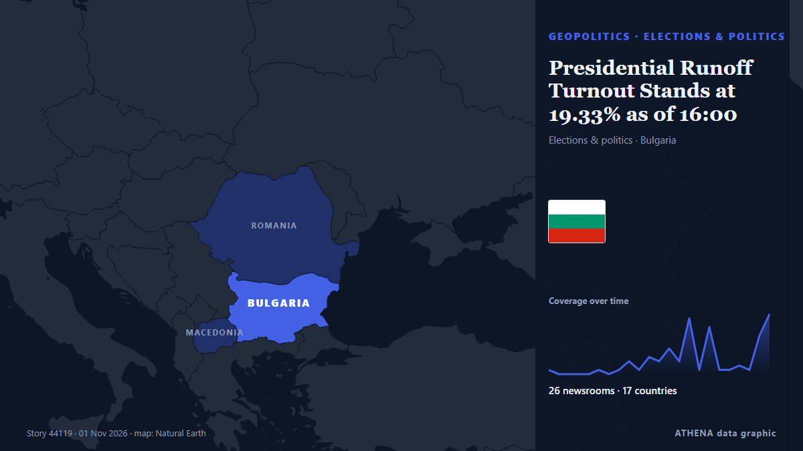

Presidential Runoff Turnout Stands at 19.33% as of 16:00

Voter turnout in Bulgaria’s presidential and vice-presidential election stood at 2.4% as of 9:00 a.m.... from Novinite
Reported independently by 28 outlets in 18 countries since 21 Oct, first by The Globe and Mail; coverage is at its peak. ATHENA rates the risk moderate (3.7/10), driven mainly by the severity of the harm described and its geographic and sector reach. Confidence is 88% (high), with 28 independent outlets corroborating it and an average source reliability of 74%. Newsrooms by country: Bulgaria (21), India (6), Canada (4). Coverage: 21 Oct to 31 Oct, 237 hours.
Why it matters: Security and diplomatic developments can shift alliances, trade and markets well beyond the countries directly involved.
What changed: 19 new reports from 7 newsrooms in the 24 hours to 2 Nov.
First reported as: Voter Turnout in Bulgaria Stands at Just 2.4%
At a glance
Selected, scored and written by ATHENA's published methodology. No editor intervenes in individual events. How this is produced ›
| 21 Oct 10:00 UTC | 1 |
|---|---|
| 21 Oct 22:00 UTC | 0 |
| 22 Oct 10:00 UTC | 0 |
| 22 Oct 22:00 UTC | 0 |
| 23 Oct 10:00 UTC | 0 |
| 23 Oct 22:00 UTC | 1 |
| 24 Oct 10:00 UTC | 0 |
| 24 Oct 22:00 UTC | 1 |
| 25 Oct 10:00 UTC | 3 |
| 25 Oct 22:00 UTC | 1 |
| 26 Oct 10:00 UTC | 4 |
| 26 Oct 22:00 UTC | 3 |
| 27 Oct 10:00 UTC | 6 |
| 27 Oct 22:00 UTC | 3 |
| 28 Oct 10:00 UTC | 13 |
| 28 Oct 22:00 UTC | 1 |
| 29 Oct 10:00 UTC | 11 |
| 29 Oct 22:00 UTC | 1 |
| 30 Oct 10:00 UTC | 1 |
| 30 Oct 22:00 UTC | 2 |
| 31 Oct 10:00 UTC | 1 |
| 31 Oct 22:00 UTC | 9 |
| 01 Nov 10:00 UTC | 16 |
| 01 Nov 22:00 UTC | 2 |
| 28 Oct 16:43 UTC | 5.2 |
|---|---|
| 28 Oct 16:45 UTC | 4.3 |
| 31 Oct 19:42 UTC | 3.5 |
| 02 Nov 09:12 UTC | 3.7 |
Why these numbers
Importance
Risk
Confidence
The reporting — who reported it, and when
headline as published · opens the original- The Globe and Mail · CanadaWhat to know about the provincial B.C. election, parties and platforms
- The Globe and Mail · CanadaToronto’s municipal election faces voter turnout test after 2022 record-low
- Novinite · BulgariaVoter Turnout in Bulgaria Stands at Just 2.4%
- Novinite · BulgariaCEC with bad news about voter turnout in Bulgaria
- TASS (English) · RussiaVoter turnout in Bulgaria’s presidential poll barely reaches 16% by 4:00 p.m. local time
- Euractiv · BelgiumBulgaria heads for tight presidential run-off after record low turnout
- The Globe and Mail · CanadaB.C. election turnout slumps to new low as fewer than half of voters cast ballot
- NDTV · IndiaNo Change To Form 6, Declaration Is Separate: Poll Body To Top Court
- BTA (English) · BulgariaBulgarian Red Cross and US Embassy Strengthen Cooperation on Safety of Foreign Nationals in Bulgaria
- Hindustan Times · IndiaWest Bengal SIR: Election Commission cites SC orders to justify 1.61 million appeals
- The Hindu · IndiaECI’s stand that additional declaration is not part of Form 6 comes days after SC said it will examine ‘new’ Form 6
- Novinite · BulgariaBulgaria Changes Vehicle Registration and Inspection Rules
- Scroll.in · IndiaBengal SIR: Appeals against voter inclusion were filed by state poll officials, EC tells SC
- Politico Europe · BelgiumEU prepares for a grim future with new climate-proofing law
- BelTA (English) — page reader · Belarus18:39 Presidential decree establishes coat of arms and flag of Gomel District President
- BTA (English) · Bulgaria82nd Anniversary of Bulgaria’s Participation in Final Stage of World War II Commemorated Near Stracin
- Novinite · BulgariaBulgaria Warns North Macedonia: EU Progress Depends on Protecting Bulgarian Rights
- Novinite · BulgariaJust 23% Voted in Bulgaria’s First Presidential Round
- APA (English) · AzerbaijanUN: Number of armed conflicts worldwide reaches record high
- BTA (English) · BulgariaVoter Turnout in First Round of Bulgaria's Presidential Election Stands at 22.98%
- CBC News (alternative feed) · CanadaPolls open across Manitoba for 'wonderful opportunity' to vote in municipal elections
- Daily Tribune · PhilippinesComelec to resume nationwide voter registration 10 November
- Novinite · BulgariaVoting Machine Issues in Bulgaria Down Threefold Compared to April Elections
- Novinite · BulgariaBulgaria to See Temperatures of Up to 17°C on Thursday
- BTA (English) · BulgariaNew drone attack in Bulgaria's Exclusive Economic Zone Dobrich Regional Administration: No Danger to Coastal Settlements After New Black Sea Drone Attack
- The Hindu · IndiaWard-wise voter rolls for Bengaluru civic polls soon
- BTA (English) · BulgariaNew drone attack in Bulgaria's Exclusive Economic Zone GERB Accuses Government of "Spineless Behaviour" and "Sweeping Problem Under Carpet" amid Black Sea Attacks
- The Hill · United StatesSupport for reelecting congressional incumbents at record lows: Gallup
- Hindustan Times · IndiaElection Commission's SIR exercise identifies just 1,600 foreigners on voter lists in six states
- BTA (English) · BulgariaYes, Bulgaria Party to Appeal Election Commission's Decision that PM Did Not Violate Election Code
- Novinite · BulgariaGyurov and Kandev Get First Slot in BNT and BNR Runoff Broadcasts
- BTA (English) · BulgariaBulgaria Among EU Countries with Rising Antimicrobial Resistance, OECD Expert Says
- BTA (English) · BulgariaBulgaria Third in Waste Generation per Capita in EU in 2024, First in Landfill Usage
- The Hill · United StatesScalise stresses voter turnout: 'We can hold the House'
- BTA (English) · BulgariaDemocratic Bulgaria Calls for Resignation of CEC Members over "Refusal to Rule on Violations of Cabinet's Press Service"
- BTA (English) · BulgariaVoter Turnout Has Fallen Between First and Second Rounds in Bulgaria’s Last Four Presidential Elections
- BTA (English) · BulgariaPresidential debate Presidential Candidate Gurov Urges Voters to Turn Out and Bring Someone Along
- Novinite · BulgariaBulgaria Beats Some Neighbors on Youth Incomes but Trails Europe
- NPR · United StatesICE activity is surging ahead of midterms. So is voter turnout.
- BTA (English) · BulgariaBulgaria Enters Election Silence Ahead of Presidential Runoff on Sunday